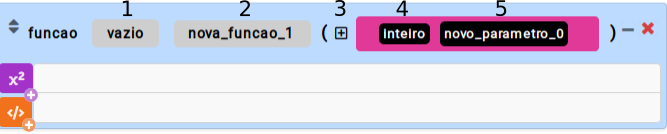

Função
Uma função é utilizada para modularizar um programa. Desta forma, podemos dividir um programa em várias partes. Cada função realiza uma tarefa definida na sua estrutura.

- Tipo da função: define o tipo de retorno da função
- Nome da função: define o nome da função
- Adicionar parâmetro: adiciona um novo parâmetro à função
- Tipo do parâmetro: define o tipo do parâmetro
- Nome do parâmetro: define o nome do parâmetro